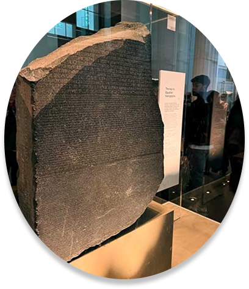
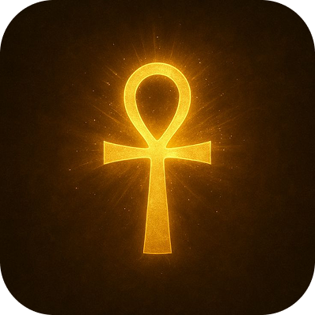
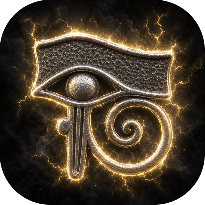
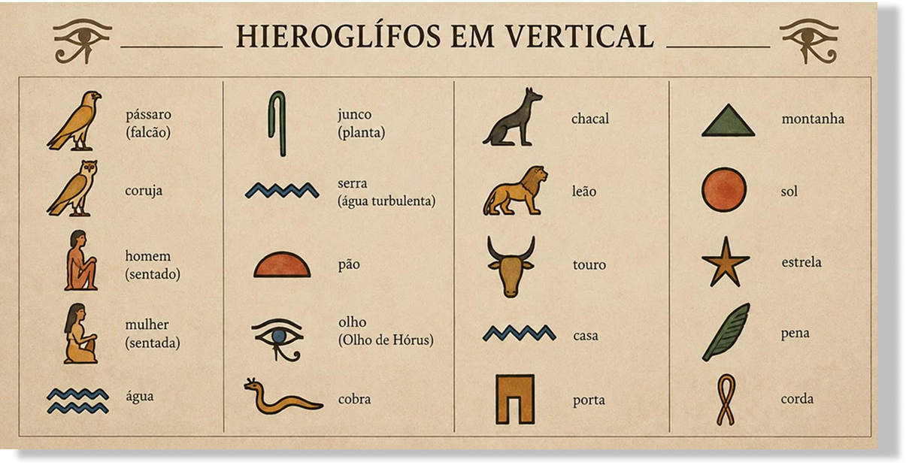

SÍMBOLOS HIERÓGLIFO
Hieróglifos são os símbolos gráficos que formavam o antigo sistema de escrita sagrada do Egito Antigo.
O "Alfabeto" de Sinais Unilíteros
Os hieróglifos egípcios não formam um alfabeto tradicional com letras fixas, mas contêm um grupo de cerca de 24 sinais chamados unilíteros, que funcionam como sons individuais equivalentes a consoantes.

SIMBOLOS MAIS FAMOSOS
-
O Ankh (Cruz Ansata):
O hieróglifo que representa a vida eterna. Visualmente se parece com uma cruz com um laço no topo.

-
O Olho de Hórus (Wedjat):
O hieróglifo que simboliza proteção, poder real e boa saúde

IMAGENS DOS SÍMBOLOS

"Que este decreto seja inscrito em uma estela de pedra dura em caracteres sagrados (hieróglifos), nativos (demótico) e gregos, e estabelecido em cada um dos templos de primeiro, segundo e terceiro grau, ao lado da imagem do rei eternamente vivo."